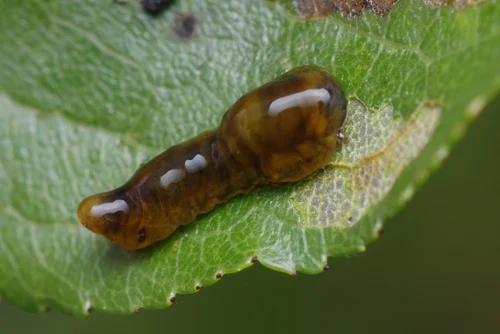

Pear leaves turn brown between intact veins
Pear sawfly larvae remove the soft outer layer of leaves rather than biting away the entire blade. A pear or cherry can consequently look scorched from a distance even though the leaf outlines remain intact. A close look at an actively damaged leaf can reveal the insect responsible.

Where to look
Examine the upper surface of pear or cherry leaves. Feeding starts as translucent patches and leaves a brown network as the scraped tissue dries. Lay a damaged leaf on white paper, then hold it up to the sky. The leaf may retain most of its outline in both views, while the thinned patches admit far more light than the remaining green tissue.
What confirms it
Look for a short dark olive larva with a shiny coating and a broader front end. Several can graze on one leaf.
Similar damage
The sluglike animal is a sawfly larva. A winding mine lies inside the leaf, while these larvae feed in plain sight on its surface.
What to do
Dislodge small colonies with a firm spray of water. Judge the need for further action by the proportion of foliage still being grazed.
Follow-up
Look at green leaves beside the original patch. New translucent areas and live larvae show that injury is continuing.
Find the transition between an old brown patch and green leaf tissue. A shiny olive larva beside newly translucent tissue is evidence of recent grazing. If all patches are dry and empty, inspect unaffected leaves elsewhere in the crown before stripping browned foliage from the tree.